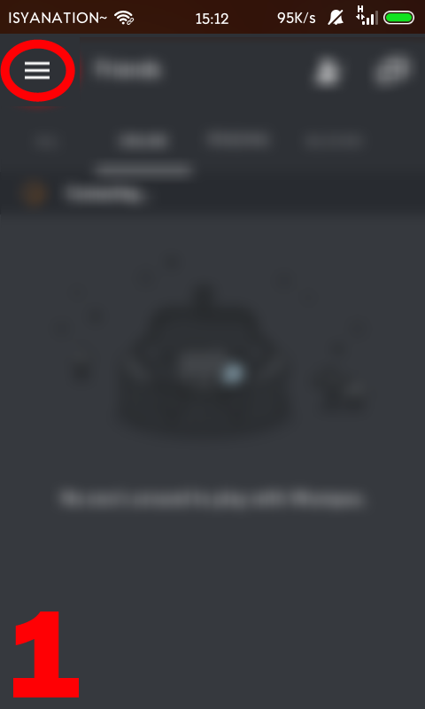
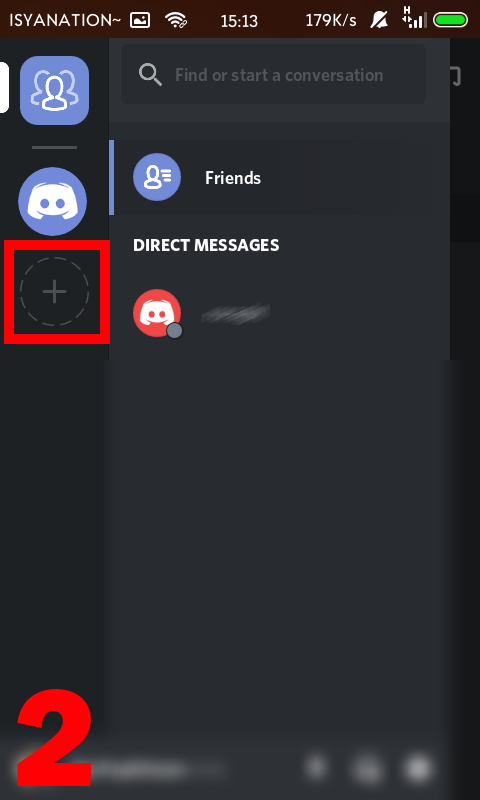
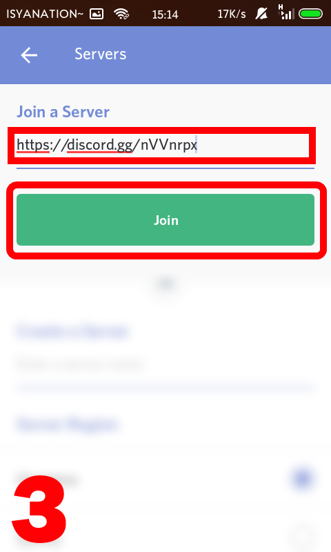
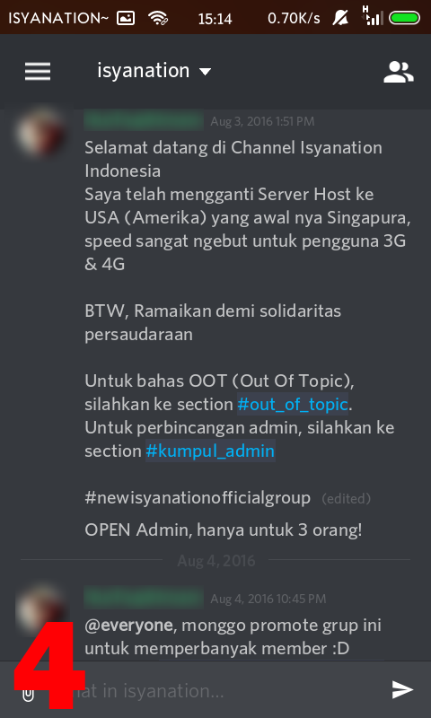
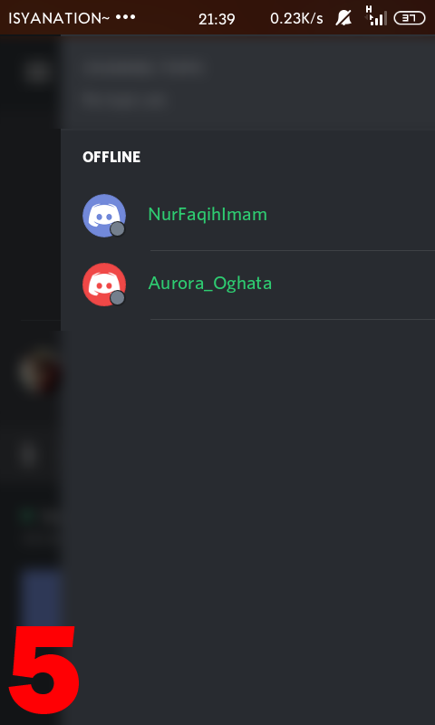

1. Download app discord :
Klik disini.
2. Install discord.
3. Buka discord.
4. Buka sidebar (tombol strip 3 yang ada di kiri layar).

5. Tekan tanda + (Plus) di layar.

6. Masukkan kode "https://discord.gg/nVVnrpx" di kotak Join a Server lalu tekan Join.

7. Selamat! Kamu sudah masuk ke grup, untuk mulai bicara silahkan tekan sidebar lagi lalu pilih suaraisyanation dan harus terhubung.

8. Untuk mengecek siapa saja yang online, silahkan tarik layar kekanan.

Gimana ? Gak terlalu ribetkan ? :D
BTW Afif Hakim, kapan mau gabung ? ini gw udah tulis :v
Copyright 2016 Nur Faqih Imam. NFI-Arts
Kalo ada yang bilang ini blogger, salah ini adalah github :v